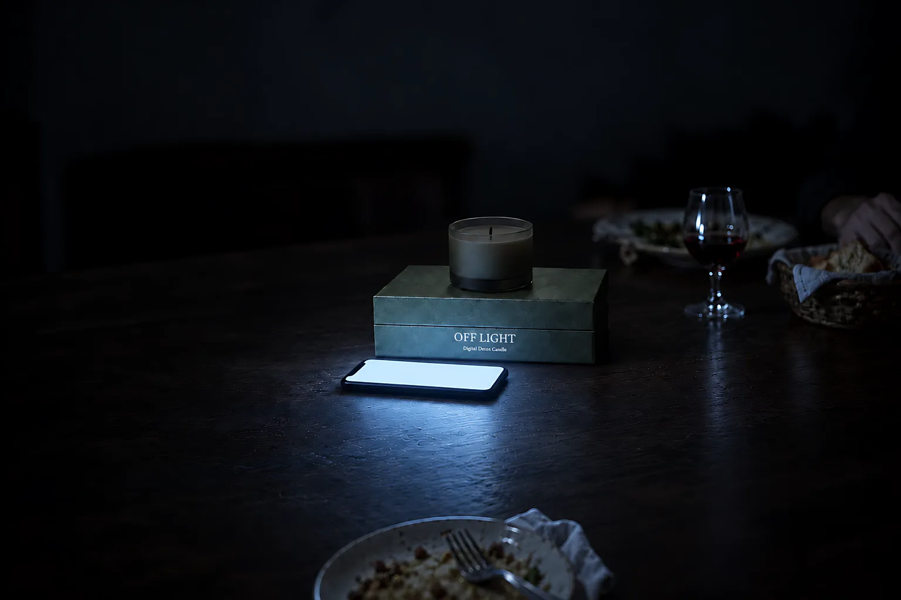
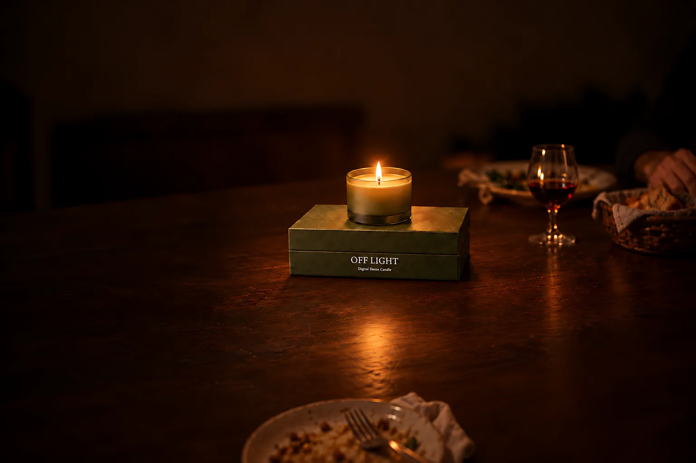
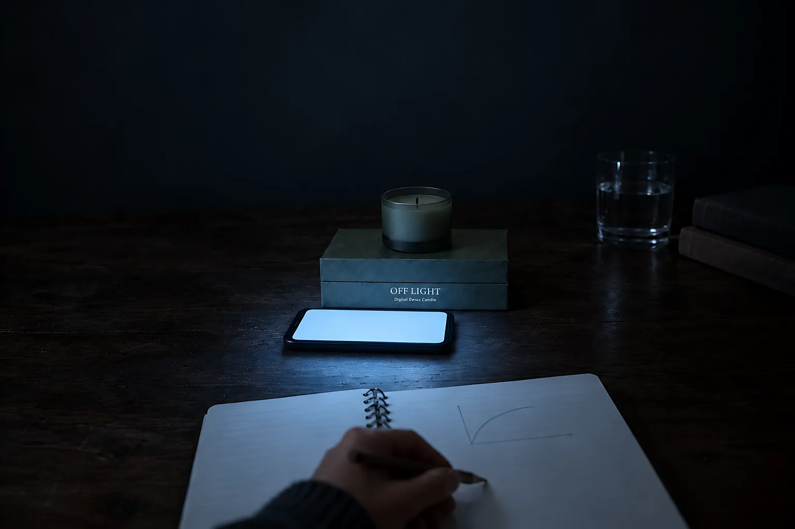
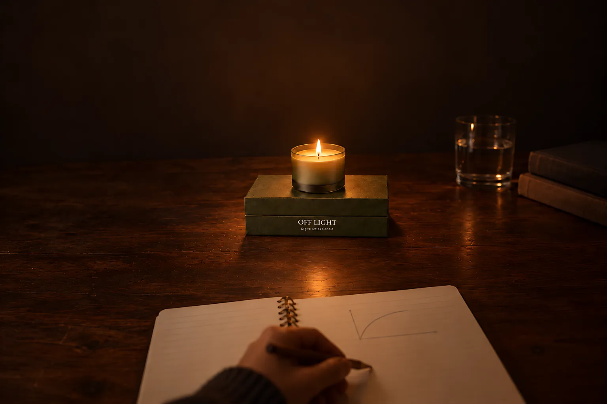
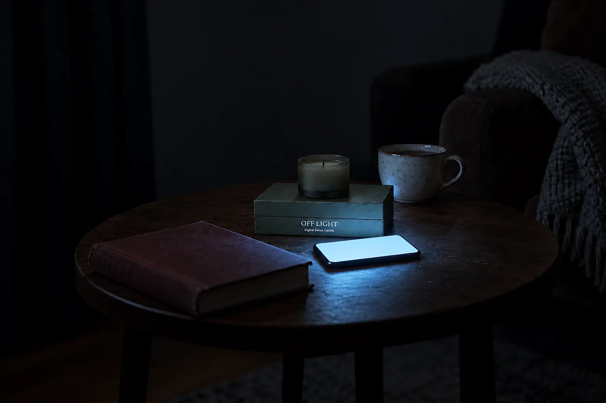
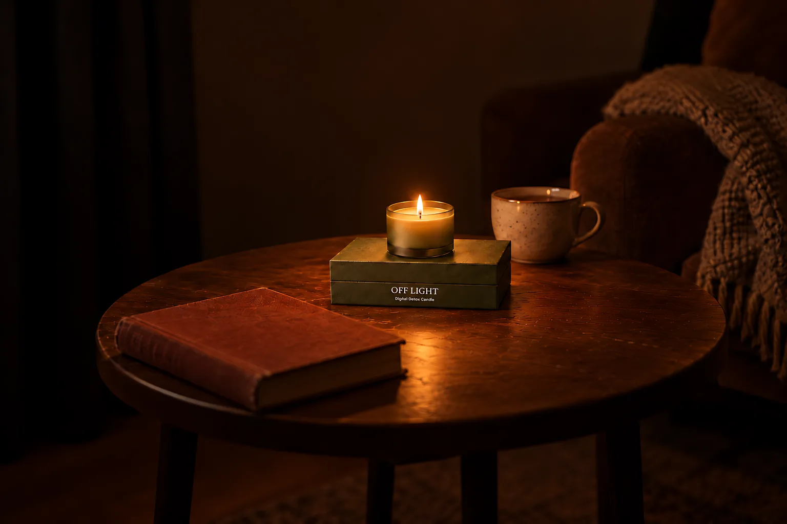
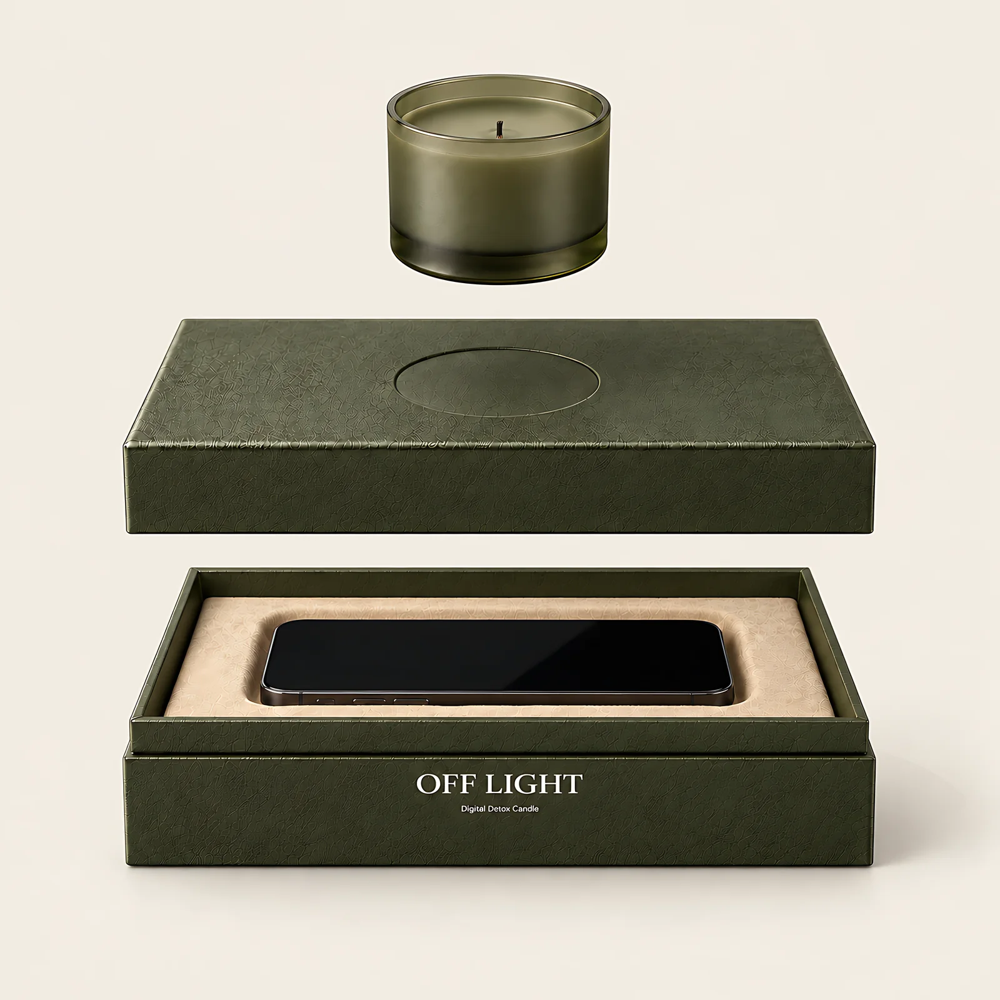

Wann kann ich OFF LIGHT bestellen?
Noch nicht. Merk dich vor, dann schreiben wir dir, sobald es losgeht. Einen Liefertermin gibt es noch nicht.






Beim Essen. Zeit fürs Gespräch.
Eine Kerze lang ohne Handy.
Vier Handgriffe, mehr ist es nicht.
2.1
Die Kerze steht lose in der Mulde im Deckel. Du hebst sie einfach ab.
2.2
Dein Handy liegt auf einem weichen Einsatz aus Samt. Der Bildschirm darf ruhig noch leuchten.
2.3
Der Deckel liegt satt auf. Was jetzt noch aufleuchtet, sieht niemand.
2.4
Stell die Kerze zurück auf den Deckel und zünde sie an. Wer jetzt ans Handy will, muss erst die Kerze auspusten.

Farbe Oliv
Die Farben sind noch ein Entwurf.
Noch nicht lieferbar. Wir schreiben dir, sobald es losgeht. Datenschutz
Oliv, Bordeaux, Nachtblau oder Anthrazit.
Schloss. Solange die Kerze brennt, bleibt die Box zu. Wer ans Handy will, pustet sie erst aus.
Zeitmaß. Die Kerze zeigt, wie lange der Abend schon dauert. Kein Timer, nichts einzustellen.
Stimmung. Warmes Licht auf dem Tisch statt kaltem Licht in der Hand.

Maße, Werte und Material sind vorläufig.
Noch nicht. Merk dich vor, dann schreiben wir dir, sobald es losgeht. Einen Liefertermin gibt es noch nicht.
Geplant ist Platz für Handys bis 17 cm Länge, auch mit Hülle. Die Box misst außen etwa 24 × 12 × 6,5 cm. Beides ist noch vorläufig.
Geplant sind etwa 25 Stunden mit 120 g Sojawachs, Baumwolldocht und satiniertem Glas. Gemessen ist das noch nicht.
Nein. Das Schloss ist die brennende Kerze auf dem Deckel. Wer ans Handy will, pustet sie erst aus. Wann du das tust, entscheidest du.
Geplant sind die Box mit Samteinsatz und eine Kerze. Ob es Nachfüllkerzen gibt, ist noch offen.
Box und Kerze in Oliv, 39,90 €. Farbe ändern
Noch nicht lieferbar. Wir schreiben dir, sobald es losgeht. Datenschutz